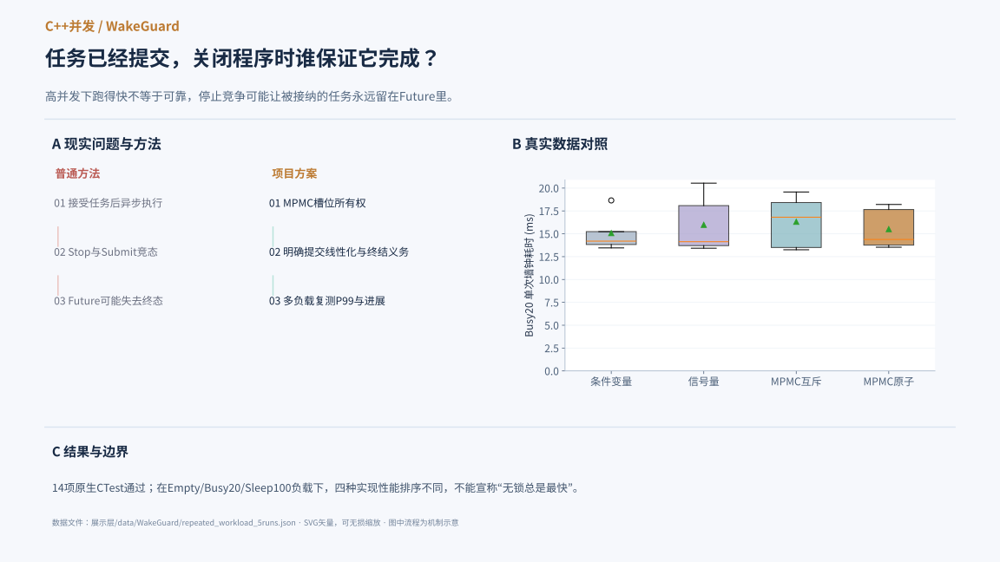

C++并发 / WakeGuard
任务已经提交，关闭程序时谁保证它完成？
高并发下跑得快不等于可靠，停止竞争可能让被接纳的任务永远留在Future里。
01 / 为什么这个问题值得解决
Submit、Queue、Stop和Future分别处在不同线程，接纳与终结之间存在竞争窗口。
02 / 看见差别：普通方法如何失效，项目如何介入
普通方案
普通方法／风险路径
风险所在：关键状态可能被误认
阶段 1接受任务后异步执行
阶段 2Stop与Submit竞态
阶段 3Future可能失去终态
项目方案
有证据的项目方法
解决方式：明确条件，留下验证证据
阶段 1MPMC槽位所有权
阶段 2明确提交线性化与终结义务
阶段 3多负载复测P99与进展
阶段 1 / 3
“提交成功”就是对任务承担责任
普通方法：风险在哪里旧做法：仅检查队列接收，不追踪任务最终由谁负责完成。
项目方法：具体改变什么项目方法：定义Submit线性化与任务完成义务，区分拒绝、完成、异常和停止。
过程为机制示意，帮助非技术读者理解不同决策逻辑；不是未经测量的真实系统运行轨迹。
03 / 技术细节与证据放在同一个画面

14 项CTest
任务协议的本地测试
14项原生CTest通过；在Empty/Busy20/Sleep100负载下，四种实现性能排序不同，不能宣称“无锁总是最快”。
14项原生CTest通过；在Empty/Busy20/Sleep100负载下，四种实现性能排序不同，不能宣称“无锁总是最快”。
原始数据：WakeGuard/repeated_workload_5runs.json。图像采用SVG矢量格式，可放大用于演示和阅读。基线与结论均限定于数据文件对应的实验条件。